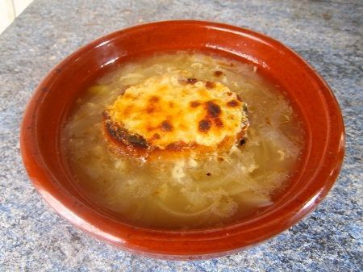

21 recetas de sopas caseras y tradicionales. Las mejores para combatir el frío - Recetas de rechupete - Recetas de cocina caseras y fáciles

Recetas de rechupete Recetas de cocina caseras y fáciles
Recetas de Postres y dulces Pescado y marisco Pollo y otras carnes Arroz Pasta Ensaladas y verduras Tapas y aperitivos Sopas, guisos y legumbres Pan, masas y rebozados Patatas, salsas y guarniciones Para ocasiones especiales Bebidas, cócteles y licores Aprende a cocinar Recetas de pollo Actualidad gastronómica Recetas fáciles y baratasInicio » Recetas por tipo » Recetas de sopas, guisos y legumbres » 21 recetas de sopas caseras y tradicionales. Las mejores para combatir el frío
21 recetas de sopas caseras y tradicionales. Las mejores para combatir el frío
4.6 / 5 20 votosPor Alfonso López
Te gusta el cuchareo y la sopa esta presente en tu vida de manera habitual, pues este es tu artículo. Nuestra selección de sopa de todo tipo, desde las más tradicionales, con todo el sabor a mar, internacionales o las más exóticas, como la sopa miso o el ramen.
Nuestras mejores recetas de sopa para disfrutar en casa. Y por supuesto con consejos y recomendaciones para que tu sopa sea de nivel, no una sopa aguada y sin sabor. Y es que partiendo de un buen caldo casero , tu sopa gana puntos para ser incluso mejor que las que hace tu abuela.
Las recetas de sopas caseras en esta época del año son la mejor opción para un primer plato en la comida (o plato único en la cena) y en alguna de mis propuestas, directamente un plato perfecto para una comida completa, saludable y única.
Además a los más peques de casa le encanta la sopa, es fácil de variar con los ingredientes que más le gusten (y combinen bien). Así que no esperes más, elije la que más te guste y a por ella. ¿Cuál te gusta más?
Práctica el ‘souping’ . Consejos para hacer sopa en casa
Pulsa en el link de arriba y tendrás algunos consejos y sopas que pueden ayudarte a depurar tu cuerpo, no con el objetivo de adelgazar, sino con el objetivo de sentirte ligero o ligera cuando te lo pida el cuerpo.
Nuestras mejores sopas tradicionales, las de toda la vida
Sopa de verduras tradicional portuguesa. Sopa à lavrador
Os enseño como preparar una de mis sopas favoritas en casa y en la que todos coincidimos, para unos por el chorizo, para otros por la combinación de legumbres y pasta, a mi por la col rizada o el repollo, mi verdura preferida.
Ribollita. Sopa de verduras al estilo de la Toscana
La ribollita toscana es una sopa que se suele preparar de un día para otro, como la mayoría de los guisos y sopas (si no llevan pasta) está mejor al día siguiente, con lo que tendréis sopa para dos días mínimo, y si os gusta tanto como a nosotros, podéis tomarla hasta para cenar.
Fassoulada o sopa de alubias griega
El secreto de este sencillo plato es usar ingredientes de buena calidad, unas alubias blancas de piel fina y un buen aceite de oliva virgen que aromatice y el guiso. De ambos ingredientes disponemos en nuestro país, así que nos va a resultar muy sencillo ponernos a cocinar la fassoulada ya mismo.
Sopa de verduras en juliana
Las verduras que incluía mi abuela en la sopa juliana solían ser las de la huerta, en este caso he añadido alguna otra más. Aunque os aconsejo esta receta, poned las que más os gusten y preparad vuestra sopa de verduras favorita, a vuestro gusto.
Sopa de cebolla. Receta tradicional francesa
Os dejo con la versión moderna de esta sopa originaria de Francia, hecha con pan seco, caldo de carne y cebollas caramelizadas. La “ soupe á l’oignon gratinée” o sopa de cebolla gratinada , una variación de la receta de Paul Bocuse en el libro “ La cocina del mercado ”. Sencilla, humilde, sabrosa, nutritiva y saludable, espero que os guste tanto como a mí.
Sopa de pollo casera
La sopa de pollo es una de esas recetas sencillas y tradicionales que nos reconfortan. En mi caso, la sopa me devuelve a la niñez. Los aromas y sabores de este plato me sientan de nuevo a la mesa en familia del mismo modo que hacemos ahora en casa.
Sopa de picadillo. Sopa de pollo tradicional
La sopa de pollo que vamos a preparar, además, es muy sencilla y económica, una forma fantástica de tener un primer plato para la comida durante los meses de invierno y, por qué no, como cena. Normalmente se prepara con el huevo bien picado, pero en casa nos gusta encontrarnos los trozos bien grandes.
Sopa de pescado y marisco
Una receta de sopa de pescado y marisco muy sencilla, en este caso con el valor añadido de un poco de marisco. Es una estupenda opción para un primer plato sabroso y ligero que acompañe a un segundo más contundente como puede ser un arroz, caldereta o pote.
Sopas de ajo o sopa castellana
Nuestras abuelas y nuestras madres ya nos preparaban esta sopa tan natural, tradicional y reconfortante. Les bastaba con ajos, pan, pimentón, agua y un poco de jamón para que nos quedásemos embobados contemplando el fuego. Siempre mirando la cazuela para ver si ya estaban listas para cenar.
Sopa de verduras Minestrone. Receta italiana
Esta sopa italiana es una combinación entre una menestra con verduras, fideos o arroz y una sopa caliente y espesa, una plato tradicional y contundente que, a menudo se sirve como plato principal.
Cómo hacer ramen. Sopa japonesa casera
El ramen , una receta de sopa japonesa que hoy en día ha traspasado las fronteras de su país de origen y se ha extendido por el mundo como la pólvora. El ramen esa sopa japonesa que es en realidad de origen chino y que basa su éxito en su sabor umami.
Cómo hacer sopa de miso
Esta sopa de miso o sopa miso se puede preparar a base de un caldo dashi y pasta de miso, que le da nombre. Y es una sopa muy flexible como la sopa ramen, partiendo de la base que os recomiendo, se pueden variar a tu gusto y hacerla un poco más suave si queremos. Recordad que en Japón esta sopa varía según la zona y temporada del año.
Sopa Pho de ternera o sopa de noodles vietnamita (Pho Bo)
Se trata de una sopa nutritiva, ligera y caliente, cuya magia reside en el tiempo de cocción, muy lento, pero una vez que se pone al fuego es cuestión de esperar. Se basa en una típica sopa de fideos de arroz o noodles, servida en un tazón. Estos fideos vienen acompañados de un caldo de ternera principalmente, aunque también se puede hacer con pollo, con pequeños trozos alargados de carne.
Consomé. Receta tradicional
La receta de hoy es de eso, un consomé en su forma tradicional, aunque en cada casa seguro que lo prepararán con pequeñas variaciones, en esencia son todas más o menos lo mismo, un caldo reducido con verduras y algún tipo de carne o pescado. Se dice que el consomé, a pesar de considerarse un plato de la cocina francesa, en realidad es de origen español.
Sopa de pescado a lo pobre
Cómo hacer una sopa de pescado a lo pobre. Esta receta de sopa de pescado nos enseña que no siempre hace falta comprar ingredientes para conseguir un plato sabroso y contundente. Y es que su base son las cabezas de pescado que pueden haber quedado de una comida anterior y un trozo de pan duro que le va a aportar cuerpo y calorías. Convirtiendo una sopa en un plato muy nutritivo e ideal para esos fríos días de invierno.
Sopa marinera con arroz
Cómo preparar una sopa marinera . Plato casero de cuchara con todo el sabor a mar perfecto para el día a día o una ocasión especial. Paso a paso con fotos.
Caldo de res mexicano
Cómo hacer un caldo de res mexicano, un maravilloso caldo que puede ser el añadido ideal a tu menú semanal, tanto para comidas como cenas.
Sopa tarasca mexicana
La sopa tarasca es tradicional del estado de Michoacán, en México. Es una variedad de la sopa de preparó una sopa tortilla tradicional que decidieron llamar “sopa tarasca”, convirtiéndose hoy en día en un plato fundamental de la gastronomía mexicana. Una sopa muy sabrosa y sencilla de hacer que os llevará a los sabores tradicionales del pueblo mexicano. Absolutamente deliciosa.
Sopa de maíz o Corn chowder
La sopa de maíz o Corn chowder es un plato típico de la cocina estadounidense y canadiense que está de vicio. Dentro de la categoría de sopas o cremas con maíz esta es la que más nos gusta, con un toque de panceta ahumada de mi tierra (que podéis sustituir por otro tipo de carne, el pollo le va genial también) y que le va genial. ¿Te animas a prepararla?
Sopa wonton o wantán con pak choi
La sopa wantán es una comida reconfortante que nos puede ayudar a entrar en calor y disfrutar de los sabores orientales sin complicarnos demasiado. La receta es muy sencilla de hacer, y aunque tendréis que buscar algunos ingredientes, seguro que el resultado merece la pena.
Harira marroquí. Sopa de legumbres, carne y tomate
La deliciosa Harira, la sopa tradicional y más conocida de Marruecos. Es una sopa contundente, ya os avisamos, pero pensad que esta sopa se suele consumir durante el Ramadán, y con esos periodos de ayuno, el cuerpo necesita energía. Con garbanzos, fideos, verduras y carne (cordero o pollo), esta sopa es la pirámide alimenticia condensada en un único plato, ideal para cuando estamos hambrientos y necesitamos un buen chute de energía.
Y no te olvides que para una buena sopa, la base es siempre, un buen caldo
Cómo hacer un caldo casero perfecto
Catarros, gripe, destemple, malestar general e incluso mal de amores, si me apuras. Sea lo que sea lo que nos pase este invierno, no hay mejor remedio que un buen caldo. La mejor base para cualquier sopa de esta selección.
Por Alfonso López
Empecé Recetasderechupete.com en 2009. En estos años he escrito recetas y libros, grabado vídeos, he dado cursos presenciales y clases en escuelas de hostelería. Y cocinar para mi familia y amigos sigue siendo mi gran pasión. En esta web quiero compartir contigo toda mi experiencia, para que disfrutes de la cocina tanto como yo y todos tus platos salgan de rechupete.
¿Te ha gustado? ¡Compártelo!
Compartir Twittear Pin it ImprimirRecibe un email semanal con las nuevas recetas y recomendaciones de rechupete.
Piensa en Pixels S.L como titular de Recetasderechupete.com, usará los datos que proporciones en este formulario únicamente para enviarte las actualizaciones del blog. Tratamos tus datos con respeto. Para más información consulta la Política de privacidad . Puedes cambiar de opinión en cualquier momento y desuscribirte haciendo clic en el pie de cualquier email que recibas de esta web, o contactando a hola@piensaenpixels.com. Recetas de rechupete usa Mailchimp como plataforma en envío de emails. Mailchimp está acogido al acuerdo EU-US Privacy Shield, aprobado por el Comité Europeo de Protección de Datos. Al enviar este formulario apruebas que tus datos sean transferidos a MailChimp para procesarlos de acuerdo a su Política de Privacidad .
Si te ha gustado este artículo te gustará:
Cordero al chilindrón
Guiso de patatas con calamares
Sopa de picadillo. Sopa de pollo tradicional
Si te ha gustado esta receta o tienes alguna duda de cómo hacerla deja un comentario
Deja una respuesta Cancelar la respuesta
Este sitio usa Akismet para reducir el spam. Aprende cómo se procesan los datos de tus comentarios .
Hoy se habla de
Arroz con leche Tarta de queso Tiramisú casero Salmón marinado Muhammara Tacos al pastor Leche frita VichyssoiseRecibe un email semanal con las nuevas recetas de rechupete.
SuscríbeteRecetas
Recetas por orden alfabético Postres y dulces Carnes, pollo y otras aves Sopas, guisos y legumbres Arroz Pasta Pescado y marisco Panes, masas y rebozados Ensaladas y verduras Patatas, salsas y guarniciones Tapas y aperitivos Bebidas, cócteles y licores Para ocasiones especiales Recetas por temática Recetas fáciles Cómo hacerAprende a cocinar
Cursos de cocina Imprimibles Ingredientes y alimentos Utensilios y menaje de cocina Productos de temporadaCultura gastronómica
Actualidad gastronómica Libros de cocinaLas mejores recetas
Albóndigas en salsa. Receta fácil al estilo de mi abuela Cómo hacer churros Cordero al horno o asado Estofado de ternera Guacamole mexicano fácil Lasaña de carne casera. Receta tradicional paso a paso Masa de pizza italiana Pollo al curry Fideuá de marisco y pescadoDe temporada
Ensalada de pasta fácil y deliciosa. Receta perfecta para el buen tiempo Arroz chaufa Cómo hacer el mojito perfecto Ensalada de arroz con atún. Receta fácil y fresquita Ensalada campera o ensalada de Verano Cómo hacer gazpacho andaluz casero. La receta tradicional más fácil para el verano Cómo hacer salmorejo cordobésRecetas baratas
Pollo asado fácil Tortilla de patatas Lentejas con chorizo Arroz con pollo Bizcocho de yogurt Brownie de chocolate Tortitas o pancakes caseros Hummus o crema de garbanzos 830.000 213.000 94.000 78.000 28.000 23.000 © 2009-2021 Recetas de rechupete - Todos los derechos reservados Términos de uso · Política de privacidad · Política de cookies
Diseñado por PIENSA en PIXELS · Cloud hosting con StackScale